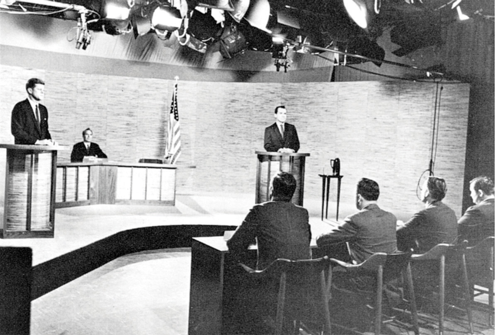
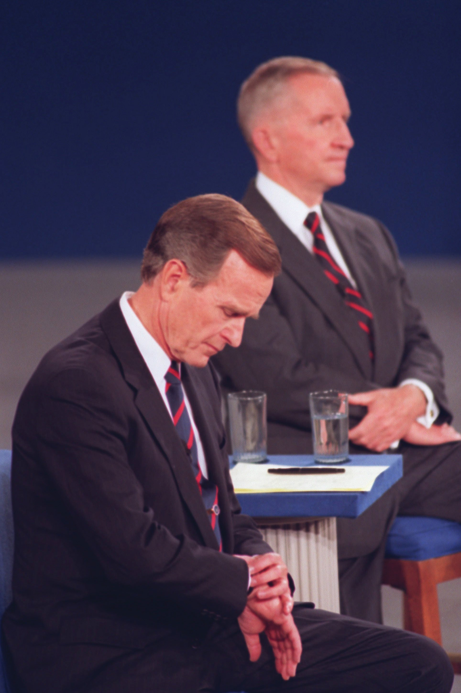
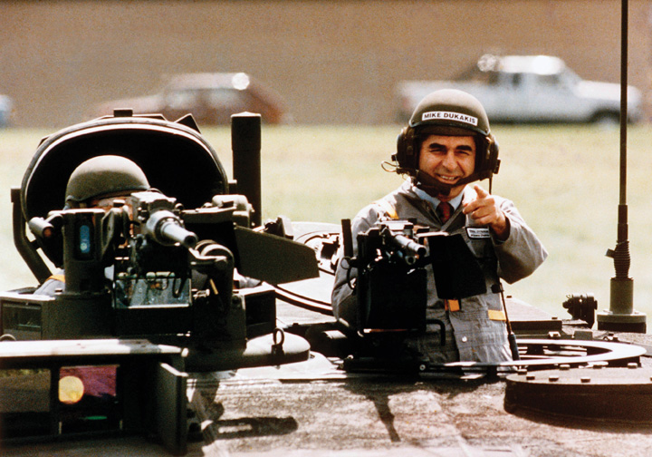

After reading this section, you should be able to answer the following questions:
Campaigns want to influence media coverage in their candidate’s favor. They seek to dominate the election agenda, frame and prime issues, and have the media transmit their message of the day. The proliferation and diversity of modes of communication makes this complicated. Campaigns attempt to control their political advertisements and influence debates. They try to set the news-media agenda, but the relationship is uncertain at best.For an award-winning study of media in the 1992 presidential election, see Marion R. Just, Ann N. Crigler, Dean E. Alger, Timothy E. Cook, Montague Kern, and Darrell M. West, Crosstalk: Citizens, Candidates, and the Media in a Presidential Campaign (Chicago: University of Chicago Press, 1996).
Television and radio advertisements are essential elements of election campaigns.See Edwin Diamond and Stephen Bates, The Spot (Cambridge, MA: MIT Press, 1992); and Kathleen Hall Jamieson, Packaging the Presidency, 3rd ed. (New York: Oxford University Press, 1996). Ads capitalize on people’s beliefs and values. They are often designed to arouse emotions, such as anxiety and fear, hope and enthusiasm.Ted Brader, Campaigning for Hearts and Minds (Chicago: University of Chicago Press, 2006). They attract attention with dramatic visuals, sounds, and slogans. They sometimes exaggerate, even distort, information.
Candidate advertising in the information age has become more complex as campaigns seek to disseminate their ads through multiple platforms. Candidates release ads on candidate and political-party websites and on video-sharing platforms, such as YouTube and Hulu. Ads also are posted or linked on news sites and blogs.
Ads come in many formats, but even now when glitzy techniques are available, the talking head, in which the candidate speaks directly to the audience, is common. Other formats are testimonials from people enthusiastically supporting the candidate and documentary ads utilizing footage of the candidate campaigning. Ads that utilize a “self-incrimination” of the opponent can be devastating. In 1992, the Clinton campaign ran an effective ad juxtaposing President George H. W. Bush’s positive comments about the economy with data showing its decline.
Ads can use a panoply of visual and sound techniques. Distance (tight close-ups can be unflattering), angles (camera shots that look up make an individual seem more powerful), movement (slow motion suggests criminality), editing (people looking at a candidate with adoration or disgust)—all these techniques influence viewers’ reactions. Color also influences perceptions: blue reassures, red threatens. Candidates often are shown in flattering color while the opponent is depicted in sinister black and white. Morphing, electronically changing and blending photographs and other visuals, can identify candidates with unpopular figures, such as Adolf Hitler.
Attack adsCampaign ads that disparage the opposing candidate’s qualifications, character, image, record, and issue positions. denounce elements of the opponent’s record, image, and issue positions.For a discussion of how candidates go negative as circumstances warrant or allow, see Emmett H. Buell Jr. and Lee Sigelman, Attack Politics: Negativity in Presidential Campaigns since 1960 (Lawrence: University Press of Kansas, 2008). They have been criticized as “the crack cocaine of politics” and for being demeaning and misleading. They also have been praised as “political multivitamins,” providing voters with pertinent and substantial evidence-backed information about policies they would otherwise not encounter. Attack ads can allow voters to contrast candidate’s qualifications and issue stance.See Michael M. Franz, Paul B. Freedman, Kenneth M. Goldstein, and Travis N. Ridout, Campaign Advertising and American Democracy (Philadelphia, PA: Temple University Press, 2008); and John G. Geer, In Defense of Negativity: Attack Ads in Presidential Campaigns (Chicago: University of Chicago Press, 2006). “Multivitamin” quote is from Michael M. Franz, Paul B. Freedman, Kenneth M. Goldstein, and Travis N. Ridout, Campaign Advertising and American Democracy (Philadelphia: Temple University Press, 2008), 143 and “crack” quote by Senator Tom Daschle is from John G. Geer, In Defense of Negativity: Attack Ads in Presidential Campaigns (Chicago: University of Chicago Press, 2006), 1. They can mark memorable moments in campaigns, such as the “Daisy AdA famous ad, produced by Democratic presidential candidate Lyndon Johnson’ s campaign against Republican Barry Goldwater in 1964, that appealed to voters’ fear of a nuclear attack.” attacking Republican presidential candidate Senator Barry Goldwater in 1964.
Attack ads employ a number of techniques to convey their points. They can point out “flip-flops,” exposing apparent contradictions in the opponent’s voting record and public statements. They can chastise the opponent for “not being on the job” and missing votes. Ads can convey “guilt by association,” linking the opponent to unpopular individuals and organizations. Candidates can attempt to refute attack ads with denials, explanations, rebuttals, and apologies. However, many attack ads are effective in generating negative impressions of candidates. Rebuttals tend to repeat the original charge and prolong the ad’s visibility.Michael Pfau and Henry C. Kenski, Attack Politics (New York: Praeger, 1990), 53. The Wisconsin Advertising Project provides information and research about candidate, political-party, and interest-group advertising.
The Daisy Ad
The Daisy ad, an enduring attack ad, was designed for the 1964 election campaign of Democratic president Lyndon Johnson. It exploited the fear that Johnson’s Republican opponent, Senator Barry M. Goldwater of Arizona, was willing to use nuclear weapons.
The ad shows a little girl plucking the petals from a daisy as she counts down out of order from ten. A doomsday-sounding male voice takes over the countdown. At zero, there is a nuclear explosion, and the girl’s face turns into a mushroom cloud that fills the screen.
Over the roar of the cloud, President Johnson intones, “These are the stakes. To make a world in which all of God’s children can live, or to go into the dark.” The word stakes, with its suggestion of being burnt at the stake, fits the Johnson campaign slogan, which ends the ad: “Vote for President Johnson on November 3. The stakes are too high for you to stay home.”
The ad, which only ran once on television, never mentions Goldwater’s name. It was not necessary. People were soon informed by the news media that it referred to him. Outraged Republican leaders unintentionally publicized the ad, which only was aired once by the Johnson campaign. The news media replayed the ad, increasing its visibility and the negative effect it had on the Goldwater candidacy.
View the ad in its entirety at http://www.livingroomcandidate.org/commercials/1964/peace-little-girl-daisy.
The Daisy Ad
(click to see video)The classic attack ad from President Lyndon Johnson’s 1964 campaign in which it is implied that Republican challenger Senator Barry Goldwater, whose name is never mentioned, is prepared to use nuclear weapons. The Daisy ad ran only once on television, but it gained tremendous notoriety through media coverage that proved detrimental to Goldwater.
Political Advertising Archives
The Living Room Candidate at http://www.livingroomcandidate.org is a rich archive of campaign advertising dating back to the 1952 presidential election.
The Wisconsin Advertising Project at http://wiscadproject.wisc.edu provides data and research on ads in addition to copies of historic ads.
Some newspapers, a few television stations, and websites, such as FactCheck.org, analyze ads and point out their inaccuracies. These ad watchesMedia and academic efforts to analyze campaign ads and point out their inaccuracies. may limit the deceptiveness of ads in an election. But they may boomerang by showing the ads to people who might not otherwise have seen them.
Toward the end of a campaign, ad checks have trouble standing out amid the clutter of so many ads for so many candidates. People also can ignore them, skip over them with remotes, and delete them with a keyboard stroke.
Ensuring Accuracy
FactCheck.org is a project of the Annenberg Public Policy Center, which checks ads and news stories for inaccuracies on a continuing basis.
Learn more about FactCheck.org at http://www.FactCheck.org.
DebatesFormal meetings between candidates running for office, typically moderated by an impartial party, that allow candidates discuss issues and policy positions. between candidates running for office have become a campaign ritual. They allow voters to assess how candidates respond to questions and think on their feet. Debates also provide an opportunity for voters to directly compare candidates’ stands on issues. While television is the most popular medium, voters can tune into debates via a wide range of platforms, including radio and Internet sites. YouTube debates have been held where candidates answer questions that are submitted on video by average citizens.
Candidates seek to influence their debates by negotiating with the sponsoring organization and their opponents.On debates, see Alan Schroeder, Presidential Debates: Fifty Years of High-Risk TV, 2nd ed. (New York: Columbia University Press, 2008); and Newton N. Minow and Craig L. LaMay, Inside the Presidential Debates: Their Improbable Past and Promising Future (Chicago: University of Chicago Press, 2008). They negotiate over who will participate, the number and timing of debates, the subjects that will be addressed, and who will be the moderators and questioners. No detail is left out, including whether questions can be followed-up, the type of audience involvement, the length of answers, the height of the podia behind which the candidates will stand, whether and how much the candidates can move about the stage, and whether the camera can cut away from the speaker to an opponent.
Figure 11.7 The Televised Kennedy-Nixon Debate
Vice President Richard Nixon, confident about his debating skills, underestimated the importance of appearance. He was wan and sweating in contrast to his assured opponent, Senator John F. Kennedy, during the first televised debate of the 1960 presidential election.
Source: Photo courtesy of the National Parks Service, http://commons.wikimedia.org/wiki/File:Kennedy_Nixon_Debat_%281960%29.jpg.
In the first-ever televised presidential debate, the Kennedy-Nixon debateThe first-ever televised presidential debate between Vice President Richard Nixon and Senator John F. Kennedy in 1960. in 1960, the camera cut away to show Vice President Richard Nixon, who was recovering from the flu and wearing heavy pancake makeup, sweating while his opponent, Senator John F. Kennedy (D-MA), coolly answered questions. Viewers who saw the debate on television declared Kennedy the debate winner. However, people who listened to the debate on radio were turned off by Kennedy’s heavy Boston accent and felt that Nixon had won the debate.
1960 Kennedy-Nixon Debate (Part I) (1960)
Watch video of the Kennedy-Nixon Debate, 1960 at http://www.archive.org/details/1960_kennedy-nixon_1.
Candidates are coached for debates. They prepare answers to anticipated questions that can be designed to catch them off guard, which might result in a gaffe. They memorize words and phrases from their campaign strategists that have been tested in focus groups and polls. They try to project leadership, appear likeable and sincere, stay on message, emphasize issues that favor them, be critical of, but not nasty toward, their opponent, and avoid gaffes.
Clinton vs. Bush in 1992 Debate
(click to see video)President Bush checks his watch during a presidential debate in 1992.
Figure 11.8 George H. W. Bush at a 1992 Town Hall Debate
Small things can loom large in a debate: President Bush checking his watch was seen by some reporters and viewers as his lack of interest in the debate, a hope that it would soon end, and a sign of his struggling candidacy in 1992.
Source: Used with permission from AP Photo/stf/Ron Edmonds.
The campaigns spin the media before and after the debates. Predebate, they lower expectations about the debating skill of the candidate and raise them for the opponent. Campaign supporters try to convince journalists that their candidate won the debate. This spin is essential because journalists’ judgments, more than the substance of the debate, influence public opinion.Diana Owen, “The Debate Challenge,” in Presidential Campaign Discourse, ed. Kathleen E. Kendall (Albany: State University of New York Press, 1995), 135–55. Journalists and pundits, in their instant analysis and polls of viewers, frame debates in terms of who won or lost. They focus on “defining moments,” identifying memorable lines and gaffes. In his debate with Jimmy Carter in 1976, President Gerald Ford, trying to make a statement about the spirit of the East Europeans, said that the Soviet Union did not dominate Eastern Europe. Although people watching the debate registered little reaction, reporters picked up on this apparent blunder and hounded Ford for days. Public opinion swung from seeing the debate as essentially a tie to seeing it as a crippling loss for Ford.
The speed of the twenty-four-hour news cycle and the range of media outlets make it difficult for campaigns to control what the news media report. Still, they try to stick to one message each day, embellishing it with sound bitesBrief phrases uttered by candidates that are designed to be compelling and fit into news stories. to appeal to the attending reporters. They stage events and photo opportunities, or photo opsStaged events designed to depict a candidate favorably in the media., with carefully selected locations, backdrops, and crowds. Staging can backfire. To show that he was strong on defense, Democratic presidential candidate Michael Dukakis appeared in a tank during the 1988 campaign. The press reported that his helmet made him look like the comic book character Snoopy.
Figure 11.9 Michael Dukakis in a Tank during the 1988 Presidential Election
Democratic presidential candidate Michael Dukakis’s campaign advisors felt that depicting him in a tank would prove that he was not weak on defense. Provoking mockery from the press corps, cartoonists, and late-night comedians, the photo op had the reverse effect.
Source: Used with permission from AP Photo/Michael E. Samojeden.
Reporters and editors have the final say over the subjects and frames of campaign news. Bill Clinton’s campaign manager, James Carville, described the power of the news media as “staggering” and said that his staff dubbed them “The Beast.”Mary Matalin and James Carville, with Peter Knobler, All’s Fair: Love, War, and Running for President (New York: Random House, 1994), 185.
Horse race coverageNews-media election coverage that emphasizes who is winning and losing the race. focuses on which candidate is leading and which is trailing based on their standing in the polls, and it dominates campaign news. Coverage also focuses heavily on the campaign process and strategies, including the actions, decisions, and conflicts of the candidate’s staff. The press highlights candidates’ attacks on one another, as well as conflicts, controversies, blunders, and gaffes. Scandal, such as misconduct in office and illegal drug use, sometimes brought to reporters’ attention by a candidate’s opponents and spread on the Internet’s rumor mills, is a news staple.See Stephen J. Farnsworth and S. Robert Lichter, The Nightly News Nightmare: Television’s Coverage of U.S. Presidential Elections, 1988–2004, 2nd ed. (Lanham, MD: Rowman & Littlefield, 2007) for an analysis and denunciation of the television news networks’ coverage of presidential elections.
Coverage of policy issues in the news is slight, even in presidential elections. Candidates focus on only a few policy positions, which they repeat throughout the campaign. Journalists have little reason to report them frequently. Besides, policies lack the excitement and drama of the horse race.
Candidates attempt to control their image, establish their campaign theme, and set the issue agenda through their campaign advertising. They design ads that will appeal to their supporters and reach out to undecided voters. Negative ads are prevalent in campaigns, as they can be effective in creating negative views of opponents and allowing voters to compare candidates.
Debates allow voters to assess candidates one-on-one. Candidates seek to control debates by negotiating the logistics and engaging in intense preparation. Media engage in postdebate assessments of the candidates’ performances.
News media focus heavily on the horse race and strategy elements of campaigns, especially who’s ahead and who’s behind in the polls. Candidate’s messages are conveyed in short sound bites. Journalists pay more attention to a candidate’s image, gaffes, and scandals than to issues.